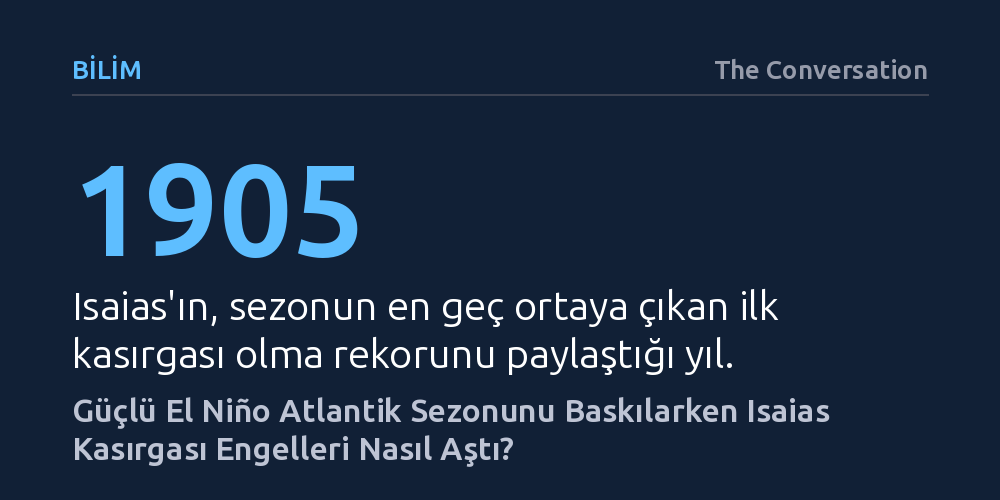

BILIM · The Conversation · 2026-10-10
Güçlü El Niño'nun yol açtığı dikey rüzgâr makası ve kuru hava Atlantik kasırgalarını ekim ayına kadar engelledi. Meksika Körfezi'ndeki yerel nem artışı ve rüzgâr makasının zayıflaması ise Isaias'ın 1905'ten bu yana en geç oluşan ilk kasırga olmasını sağladı.
Sakin başlayan kasırga sezonlarının tehlikesiz biteceği algısını yıkarak, küresel iklim kalıplarının yerel atmosferik boşluklarla delinebileceğini gösteriyor.

Atlantik Okyanusu'nda kasırga mevsimi olağan şartlarda eylül ayında zirve noktasına ulaşır. Tarihsel kayıtlara bakıldığında, ekim ayının başına gelindiğinde bölgede ortalama beş kasırga ve bunlardan en az ikisinin büyük çaplı kasırga seviyesine ulaştığı görülür. Ancak 2026 yılı, kasırga takviminin alışılagelmiş ritmini tamamen altüst ederek modern meteoroloji tarihinin en durağan sezon başlangıçlarından birine sahne oldu.
Ekim ayının ilk haftasına kadar tek bir kasırganın bile oluşmaması neredeyse emsalsiz bir tabloydu. Bu derin sessizlik, nihayet 9 Ekim gecesi Isaias Kasırgası'nın Florida'nın Destin kenti yakınlarında Kategori 2 şiddetinde karaya çıkmasıyla bozuldu. Isaias, bu gelişimiyle bir sezonda kayıtlara geçen en geç ilk kasırga olma rekorunu 1905 yılındaki tarihi fırtınayla paylaşmış oldu.
Sezonun ilk üçte ikilik bölümünü kasırgasız geçiren atmosferik dinamiğin merkezinde El Niño olgusu yer alıyor. Pasifik Okyanusu'nun orta ve doğu kesimlerindeki yüzey sularının aşırı ısınmasıyla tetiklenen bu küresel iklim kalıbı, 2026 yazının sonlarında tarihin en kuvvetli evrelerinden birine ulaştı. Doğu Pasifik'teki bu ısınma, devasa gök gürültülü fırtınaları ve yükselen hava akımlarını harekete geçirerek Orta Amerika üzerinden kuzeye doğru ilerleyen güçlü bir atmosferik koridor oluşturdu.
Bu yükselen hava akımı, Dünya'nın kendi ekseni etrafında dönmesinin yarattığı saptırıcı etkiyle kuzey yarımkürede doğuya yöneldi ve tropikal Atlantik üzerindeki batı rüzgârlarını belirgin şekilde güçlendirdi. Yüzeydeki doğu rüzgârları ile üst irtifalardaki batı rüzgârlarının çatışması ise dikey rüzgâr makasını meydana getirdi. Rüzgâr makası, dönen bir fırtına sütununa dönüşmeye çalışan nemli hava kolonlarını parçalayarak kasırga çekirdeklerinin örgütlenmesini engelledi.
El Niño'nun savunma kalkanı yalnızca rüzgâr makasıyla sınırlı kalmadı. Doğu Pasifik'te hızla yükselen hava kütleleri, atmosferik dengenin bir sonucu olarak tropikal Atlantik üzerinde alçalarak kuru bir hava tabakası oluşturdu. Kasırgaların ihtiyaç duyduğu yoğun nemden yoksun kalan ve aynı zamanda rüzgâr makasına maruz kalan Atlantik havzasında fırtınalar aylarca tutunamadı. Yalnızca bu kuşağın daha kuzeyinde beliren birkaç zayıf sistem oluşabildiyse de yüksek enlemlerin soğuk koşulları onların güçlenmesine izin vermedi.
Isaias'ın tüm bu engelleri aşabilmesinin temel nedeni, fırtınaların geleneksel doğum yeri olan derin tropiklerde değil, batı Meksika Körfezi'nde ortaya çıkmasıydı. Tropikal Atlantik kuşağında yıkıcı rüzgâr makası etkisini kesintisiz sürdürürken, ekim ayı başında Meksika Körfezi'nin batısında rüzgâr makasında geçici bir zayıflama yaşandı ve bölgeye dar ama yoğun bir nem dalgası sokuldu.
Bu elverişli atmosfer penceresine ek olarak, Körfez'deki deniz yüzeyi sularının olağanüstü yüksek sıcaklığı fırtınanın hızla güçlenmesi için gereken termal enerjiyi sağladı. Ancak Isaias ABD kıyılarına yaklaştıkça başka bir atmosferik oyuncu sahneye çıktı: Sonbaharın gelişiyle güneye doğru sarkan kutup jet akımı. Jet akımının etkisiyle rüzgâr makası yeniden tırmanışa geçti. Bu durum Isaias'ın daha da yıkıcı bir kategoriye ulaşmasını sınırlasa da fırtına Kategori 2 gücünde tehlikeli bir kasırga olarak karaya ulaştı.
Isaias'ın kısa sürede toparlanıp karaya vurması, kasırga sezonunun yavaş başlamasının her zaman sakin biteceği anlamına gelmediğini çarpıcı biçimde kanıtlıyor. Atlantik kasırga sezonu resmi olarak 30 Kasım tarihine kadar devam ediyor ve sonbahar geçişinde atmosferik koşullar temmuz ve eylül ayları arasındaki durağan kalıplardan çok farklı dinamikler sergileyebiliyor.
Ekim ayında hava sıcaklıklarının düşmesi ve üst atmosfer akımlarının yön değiştirmesi, fırtına yollarını ve yerel savunma açıklarını her an yeniden şekillendirebilir. Bu nedenle kıyı bölgelerinde yaşayanların rekor sessizliğe aldanıp rehavete kapılmaması ve mevsimin son günlerine kadar hazırlıklı olması hayati önem taşıyor.